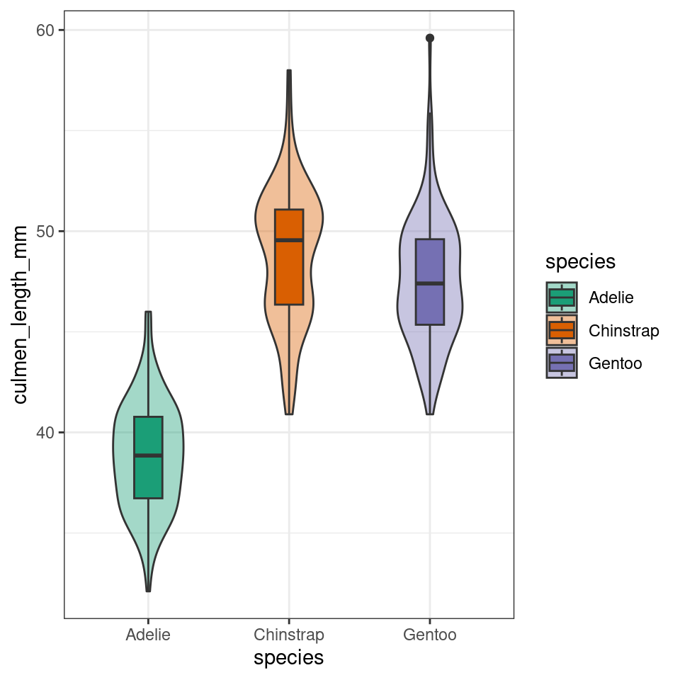
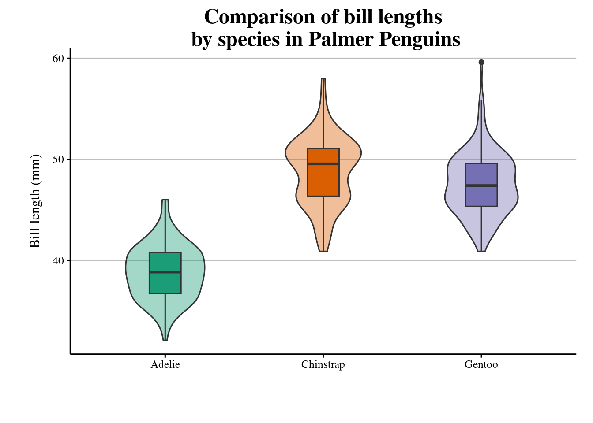

19 Custom ggplot themes
It is often the case that we start to default to a particular 'style' for our figures, or you may be making several similar figures within a research paper. Creating custom functions can extend to making our own custom ggplot themes. You have probably already used theme variants such as theme_bw(), theme_void(), theme_minimal() - these are incredibly useful, but you might find you still wish to make consistent changes.
plot <- penguins |>
drop_na(sex) |>
ggplot(aes(x = species, y = culmen_length_mm, fill = species)) +
geom_violin(width = .5,
alpha = .4)+
geom_boxplot(width = .2)+
scale_fill_brewer(palette = "Dark2")
plot
With the addition of a title and theme_classic() we can improve the style quickly
plot+
ggtitle("Comparison of bill lengths by species in Palmer Penguins")+
labs(x = "",
y = "Bill length (mm)")+
theme_classic()But I still want to make some more changes, rather than do this work for one figure, and potentially have to repeat this several times for subsequent figures, I can decide to make a new function instead. See here for a full breakdown of the arguments for the theme() function.
Note when using a pre-set theme, and then modifying it further, it is important to get the order of syntax correct e.g
theme_classic + theme() # is correct
theme() + theme_classic() # will not work as intended
# custom theme sets defaults for font and size, but these can be changed without changing the function
theme_custom <- function(base_size=12, base_family="serif"){
theme_classic(base_size = base_size,
base_family = base_family,
) %+replace%
# update theme minimal
theme(
# specify default settings for plot titles - use rel to set titles relative to base size
plot.title=element_text(size=rel(1.5),
face="bold",
family=base_family),
#specify defaults for axis titles
axis.title=element_text(
size=rel(1),
family=base_family),
# specify position for y axis title
axis.title.y=element_text(angle = 90,
margin = margin(r = 10, l= 10)),
# specify position for x axis title
axis.title.x = element_text(margin = margin(t = 10, b = 10)),
# set major y grid lines
panel.grid.major.y = element_line(colour="gray", size=0.5),
# add axis lines
axis.line=element_line(),
# Adding a 0.5cm margin around the plot
plot.margin = unit(c(0.2, 0.5, 0.5, 0.5), units = , "cm"),
# Setting the position for the legend
legend.position = "none"
)
}With this function set, I can now use it for as many figures as I wish. To use it in the future I should probably save it in a unique script, with a clear title and comments for future use.
I could then easily use source("custom_theme_function.R") to make this available to any scripts I was using.
plot+
ggtitle("Comparison of bill lengths\n by species in Palmer Penguins")+
labs(x = "",
y = "Bill length (mm)")+
theme_custom()